Calculate summary statistics
Summary measures
I’m making the assumption now that all trees recorded as cut were alive in the initial conditions. For all of the following I use trees with status 1, 2, 3, 15, 16. Fifteen and 16 are cut trees, but in the long data format, they only occur on entries where year = “init” so they do not affected other periods. Status 1, 2 and 3 represent second-growth, advanced regen, and old-growth, respectively.
Generally, the summarise() command in each section defines the output of a given measure. The mutate() command is also used for calculating new columns. Calculations are done by grouping levels (generally by treatment, by year).
# I'll store all my metrics in this list
measures <- list()Density
I’ll look at a quick summary of quartiles of the number of tree observations by plot for each year. Initial plots had between 83 and 164 observations and subsequent years are roughly parallel. Density is being calculated for all live trees, including those broken above dbh.
d_l %>%
filter(status %in% c(1, 2, 3, 15, 16, 31)) %>%
group_by(year, plot) %>%
summarize(n = n()) %>%
summarize(as_tibble_row(quantile(n)))## # A tibble: 4 x 6
## year `0%` `25%` `50%` `75%` `100%`
## <ord> <dbl> <dbl> <dbl> <dbl> <dbl>
## 1 init 83 124 134. 143. 164
## 2 08 26 40.8 84 108. 147
## 3 13 21 35.5 79 94 117
## 4 18 20 33.5 74.5 84.5 92measures$density <- function(data, species) {
if(is.null(species)) species <- unique(data$spp)
data %>%
filter(spp %in% species, live | status %in% c(15, 16)) %>%
group_by(treatment, year, plot) %>%
# expansion factor 12.5 (12.5 * .08 = 1 ha)
summarise(density_plot = n() * 12.5, n_density = n()) %>%
summarise(
val_density = mean(density_plot),
n_density = sum(n_density),
sd_density = sd(density_plot)
)
}Mortality
New mortality here is ascribed to observations of the current period which were alive in the previous period and are not alive in the current period and reported in tph. Currently, this is undefined for the first period (“init”) and is zero for “08” (because “init” and “08” are really only one observation). The values for 2013 and 2018 record the new mortality in the previous period, ie: 08-13 and 13-18, respectively.
measures$mort <- function(data, species) {
if(is.null(species)) species <- unique(data$spp)
data %>%
filter(spp %in% species) %>%
group_by(tree_id) %>%
mutate(mort = ((live == FALSE) * (lag(live) == TRUE)) > 0) %>%
group_by(year, treatment, plot) %>%
summarize(mort_plot = sum(mort) * 12.5, n_mort = n()) %>%
summarize(
val_mort = mean(mort_plot),
n_mort = sum(n_mort),
sd_mort = sd(mort_plot)
)
}dbh
Dbh will be calculated based on all live trees, including those broken above dbh and with broken and dead tops (most of these are SESE and assumed to be alive).
measures$dbh <- function(data, species) {
if(is.null(species)) species <- unique(data$spp)
data %>%
filter(spp %in% species, live | status %in% c(15, 16)) %>%
group_by(treatment, year) %>%
summarise(
val_dbh = mean(dbh),
n_dbh = n(),
sd_dbh = sd(dbh, na.rm = TRUE)
)
}
measures$dom_dbh <- function(data, species) {
if(is.null(species)) species <- unique(data$spp)
data %>%
filter(live | status %in% c(15, 16)) %>%
group_by(plot, year) %>%
slice_max(order_by = dbh, n = 4, with_ties = FALSE) %>%
filter(spp %in% species) %>%
group_by(treatment, year) %>%
summarise(
val_dom_dbh = mean(dbh),
n_dom_dbh = n(),
sd_dom_dbh = sd(dbh))
}Heights
Heights will be determined using only trees with unbroken, live crowns.
Because there are about 14 observations in 2008 and 2013 that do not have height measurements, I am omitting these from analysis for now. Also, I am only looking at trees that have height measurements in 2018. This means that of the 3,538 total height observations, I am only looking at 1,929 over the the three measurement periods.
For dominant heights, I am using dominant dbh trees not including broken and dead tops. Not all of these have heights. For this reason, there are fewer than 4 trees per plot.
# get ids of trees that have heights in 2018
ht_id_2018 <- filter(d_l, year == "18", !is.na(ht)) %>% pull(tree_id)
# average height I AM OMMITING MISSING HEIGHT MEASUREMENTS.
measures$ht <- function(data, species) {
if(is.null(species)) species <- unique(data$spp)
data %>%
filter(
spp %in% species,
live | status %in% c(15, 16),
!get_cond(c(2, 3)),
tree_id %in% ht_id_2018,
!is.na(ht)
) %>%
group_by(treatment, year) %>%
summarise(
val_ht = mean(ht),
n_ht = n(),
sd_ht = sd(ht)
)
}
# Dominant height
# I AM CALCULATING DOM HEIGHT ONLY FROM THOSE AVAILABLE
measures$dom_ht <- function(data, species) {
if(is.null(species)) species <- unique(data$spp)
data %>%
filter(
live | status %in% c(15, 16),
!get_cond(2, 3),
tree_id %in% ht_id_2018
) %>%
group_by(plot, year) %>%
slice_max(order_by = ht, n = 4, with_ties = FALSE) %>%
filter(spp %in% species) %>%
group_by(treatment, year) %>%
summarise(
val_dom_ht = mean(ht, na.rm = TRUE),
n_dom_ht = sum(!is.na(ht)),
sd_dom_ht = sd(ht, na.rm = TRUE)
)
}Basal Area
Basal area, similar to density will be calculated for all live trees.
measures$ba <- function(data, species) {
if(is.null(species)) species <- unique(data$spp)
data %>%
filter(spp %in% species, live | status %in% c(15, 16)) %>%
group_by(treatment, year, plot) %>%
summarise(
ba_plot = sum(dbh^2 * pi / 40000, na.rm = TRUE) * 12.5,
n_ba = n()
) %>%
summarize(
val_ba = mean(ba_plot),
n_ba = sum(n_ba),
sd_ba = sd(ba_plot)
)
}SDI
For SDI, I use the same trees that were used for basal area and density: all standing trees (broken or not) that are taller than breast height.
# do any target trees have missing dbh?
any(nrow(filter(d_l, status %in% c(1, 2, 3, 15, 16), is.na(dbh))))## [1] FALSEmeasures$sdi <- function(data, species) {
if(is.null(species)) species <- unique(data$spp)
data %>%
filter(spp %in% species, live | status %in% c(15, 16)) %>%
group_by(treatment, year, plot) %>%
summarise(
sdi_plot = sum(12.5 * (dbh * 0.04)^1.605, na.rm = TRUE),
n_sdi = n()
) %>%
summarize(
val_sdi = mean(sdi_plot),
n_sdi = sum(n_sdi),
sd_sdi = sd(sdi_plot)
)
}Initial summary tables
All species
get_measures(d_l) %>%
make_summary() %>%
kbl() %>%
kable_classic(full_width = FALSE, html_font = "Garamond") %>%
add_header_above(c(" " = 2, "Treatment" = 5)) %>%
collapse_rows(columns = 1, valign = "top")|
Treatment
|
||||||
|---|---|---|---|---|---|---|
| measure | year | C | H40 | H80 | L40 | L80 |
| Basal area (m2/ha) | init | 65.0 (5.1) | 75.0 (15.7) | 73.7 (7.5) | 71.6 (4.0) | 68.2 (12.4) |
| Basal area (m2/ha) | 08 | 65.0 (5.0) | 33.5 (7.2) | 58.4 (5.8) | 31.8 (0.8) | 54.6 (10.6) |
| Basal area (m2/ha) | 13 | 69.2 (3.8) | 39.8 (8.8) | 65.9 (7.9) | 35.7 (4.5) | 62.3 (12.5) |
| Basal area (m2/ha) | 18 | 71.7 (3.5) | 47.6 (14.7) | 75.6 (10.1) | 42.3 (6.4) | 71.1 (15.5) |
| dbh (cm) | init | 21.6 (8.2) | 22.7 (9.3) | 22.5 (8.5) | 21.9 (7.7) | 20.6 (8.1) |
| dbh (cm) | 08 | 21.6 (8.2) | 27.2 (11.0) | 22.4 (8.9) | 30.4 (7.1) | 24.2 (8.2) |
| dbh (cm) | 13 | 24.1 (9.1) | 31.8 (12.4) | 25.6 (10.4) | 34.6 (7.5) | 26.4 (9.1) |
| dbh (cm) | 18 | 27.5 (10.4) | 37.0 (14.1) | 28.2 (12.3) | 38.7 (8.6) | 28.6 (10.3) |
| Density (tph) | init | 1556.2 (191.1) | 1590.6 (418.0) | 1628.1 (160.2) | 1693.8 (181.0) | 1775.0 (120.3) |
| Density (tph) | 08 | 1556.2 (191.1) | 496.9 (121.8) | 1275.0 (127.9) | 415.6 (56.2) | 1062.5 (123.7) |
| Density (tph) | 13 | 1331.2 (98.2) | 434.4 (125.2) | 1096.9 (118.8) | 362.5 (70.0) | 1018.8 (117.5) |
| Density (tph) | 18 | 1053.1 (48.3) | 387.5 (91.9) | 1015.6 (105.3) | 343.8 (71.8) | 981.2 (143.4) |
| Dominant dbh (cm) | init | 44.5 (5.2) | 47.1 (8.6) | 46.5 (6.6) | 42.3 (4.3) | 43.6 (6.7) |
| Dominant dbh (cm) | 08 | 44.5 (5.2) | 46.3 (8.4) | 46.5 (6.6) | 41.9 (4.3) | 43.7 (6.9) |
| Dominant dbh (cm) | 13 | 48.3 (6.3) | 52.2 (9.1) | 53.8 (8.1) | 46.5 (5.0) | 46.9 (6.7) |
| Dominant dbh (cm) | 18 | 52.8 (7.0) | 58.1 (10.8) | 62.1 (9.2) | 52.2 (6.4) | 51.8 (7.2) |
| Dominant height (m) | init | 26.5 (1.6) | 26.3 (1.7) | 27.1 (1.9) | 25.6 (1.9) | 25.7 (1.7) |
| Dominant height (m) | 08 | 26.5 (1.6) | 26.3 (1.7) | 27.1 (1.9) | 25.6 (1.9) | 25.7 (1.7) |
| Dominant height (m) | 13 | 27.8 (2.1) | 28.0 (1.6) | 29.4 (2.1) | 27.8 (2.6) | 28.1 (2.2) |
| Dominant height (m) | 18 | 30.4 (2.1) | 30.4 (1.6) | 32.8 (2.4) | 29.8 (3.3) | 30.9 (2.0) |
| Height (m) | init | 20.9 (4.3) | 22.4 (3.9) | 20.1 (4.3) | 22.9 (3.2) | 21.2 (3.7) |
| Height (m) | 08 | 20.9 (4.3) | 22.3 (3.9) | 20.1 (4.3) | 22.9 (3.2) | 21.3 (3.5) |
| Height (m) | 13 | 22.9 (4.1) | 23.7 (4.5) | 22.8 (4.6) | 25.3 (3.4) | 23.7 (3.7) |
| Height (m) | 18 | 24.7 (4.3) | 25.4 (5.3) | 24.4 (5.6) | 27.2 (3.8) | 25.9 (4.5) |
| New mortality (tph) | init | NA (NA) | NA (NA) | NA (NA) | NA (NA) | NA (NA) |
| New mortality (tph) | 08 | 0.0 (0.0) | 0.0 (0.0) | 0.0 (0.0) | 0.0 (0.0) | 0.0 (0.0) |
| New mortality (tph) | 13 | 225.0 (112.3) | 62.5 (10.2) | 178.1 (62.4) | 53.1 (15.7) | 43.8 (16.1) |
| New mortality (tph) | 18 | 278.1 (52.4) | 46.9 (53.4) | 81.2 (29.8) | 18.8 (7.2) | 37.5 (30.6) |
| SDI | init | 1311.1 (123.4) | 1467.2 (274.7) | 1463.4 (133.0) | 1449.2 (38.0) | 1392.7 (198.2) |
| SDI | 08 | 1311.5 (122.1) | 611.8 (117.2) | 1151.5 (101.2) | 583.3 (14.0) | 1064.3 (162.4) |
| SDI | 13 | 1336.8 (81.9) | 685.9 (141.1) | 1229.1 (131.9) | 625.6 (84.2) | 1172.2 (190.7) |
| SDI | 18 | 1313.8 (62.7) | 776.7 (210.9) | 1342.8 (161.7) | 708.7 (110.4) | 1290.2 (231.2) |
Redwood
get_measures(species = "SESE3") %>%
make_summary() %>%
kbl() %>%
kable_classic(full_width = FALSE, html_font = "Garamond") %>%
add_header_above(c(" " = 2, "Treatment" = 5)) %>%
collapse_rows(columns = 1, valign = "top")|
Treatment
|
||||||
|---|---|---|---|---|---|---|
| measure | year | C | H40 | H80 | L40 | L80 |
| Basal area (m2/ha) | init | 13.5 (6.2) | 29.6 (23.8) | 26.4 (10.1) | 14.9 (1.6) | 19.2 (17.0) |
| Basal area (m2/ha) | 08 | 13.6 (6.1) | 18.4 (13.2) | 22.9 (7.5) | 9.4 (2.7) | 17.0 (15.4) |
| Basal area (m2/ha) | 13 | 15.7 (7.0) | 21.7 (16.1) | 27.2 (8.5) | 8.6 (4.0) | 20.1 (16.9) |
| Basal area (m2/ha) | 18 | 18.7 (8.3) | 26.9 (23.0) | 32.7 (9.9) | 9.3 (4.8) | 24.1 (19.3) |
| dbh (cm) | init | 24.1 (12.1) | 24.5 (11.6) | 22.2 (9.8) | 20.9 (9.0) | 22.0 (10.2) |
| dbh (cm) | 08 | 24.2 (12.0) | 28.8 (12.5) | 22.2 (10.0) | 27.2 (8.5) | 24.2 (10.5) |
| dbh (cm) | 13 | 26.1 (13.6) | 33.8 (14.3) | 24.6 (11.7) | 30.3 (8.9) | 26.6 (11.8) |
| dbh (cm) | 18 | 28.5 (15.3) | 40.0 (16.0) | 26.7 (13.7) | 33.6 (10.1) | 28.9 (13.3) |
| Density (tph) | init | 237.5 (72.9) | 515.6 (314.6) | 571.9 (175.4) | 365.6 (133.2) | 415.6 (256.0) |
| Density (tph) | 08 | 237.5 (72.9) | 237.5 (121.2) | 490.6 (138.6) | 146.9 (25.8) | 309.4 (173.3) |
| Density (tph) | 13 | 231.2 (61.7) | 206.2 (113.0) | 468.8 (130.9) | 109.4 (41.3) | 303.1 (161.8) |
| Density (tph) | 18 | 228.1 (56.2) | 184.4 (123.9) | 462.5 (127.1) | 96.9 (41.3) | 303.1 (161.8) |
| Dominant dbh (cm) | init | 46.9 (6.2) | 49.9 (6.8) | 48.9 (3.6) | 44.0 (3.1) | 46.1 (7.3) |
| Dominant dbh (cm) | 08 | 46.9 (6.2) | 48.6 (6.9) | 48.9 (3.6) | 43.0 (3.7) | 45.9 (8.4) |
| Dominant dbh (cm) | 13 | 51.1 (6.5) | 54.7 (7.0) | 53.5 (6.8) | 48.9 (2.4) | 50.5 (7.4) |
| Dominant dbh (cm) | 18 | 54.9 (6.0) | 63.0 (6.7) | 61.7 (7.8) | 54.9 (2.3) | 52.1 (7.2) |
| Dominant height (m) | init | 27.1 (0.9) | 25.9 (1.1) | 26.4 (0.6) | 23.6 (1.5) | 25.2 (2.1) |
| Dominant height (m) | 08 | 27.1 (0.9) | 25.9 (1.1) | 26.4 (0.6) | 23.6 (1.5) | 25.2 (2.1) |
| Dominant height (m) | 13 | 26.2 (3.4) | 27.5 (1.0) | 27.2 (1.4) | 25.3 (1.3) | 24.7 (0.4) |
| Dominant height (m) | 18 | 27.7 (0.4) | 31.1 (1.8) | 31.4 (4.3) | 25.9 (3.5) | 29.0 (0.6) |
| Height (m) | init | 19.2 (5.6) | 21.2 (4.4) | 18.0 (4.3) | 19.6 (3.1) | 19.2 (4.2) |
| Height (m) | 08 | 19.4 (5.5) | 21.1 (4.5) | 18.0 (4.3) | 19.6 (3.1) | 19.4 (3.9) |
| Height (m) | 13 | 21.1 (5.8) | 21.8 (5.3) | 20.4 (5.0) | 21.8 (3.2) | 22.1 (4.2) |
| Height (m) | 18 | 23.0 (6.0) | 22.9 (6.2) | 21.7 (6.2) | 23.0 (3.6) | 24.0 (5.4) |
| New mortality (tph) | init | NA (NA) | NA (NA) | NA (NA) | NA (NA) | NA (NA) |
| New mortality (tph) | 08 | 0.0 (0.0) | 0.0 (0.0) | 0.0 (0.0) | 0.0 (0.0) | 0.0 (0.0) |
| New mortality (tph) | 13 | 6.2 (12.5) | 31.2 (21.7) | 21.9 (12.0) | 37.5 (20.4) | 6.2 (12.5) |
| New mortality (tph) | 18 | 3.1 (6.2) | 21.9 (27.7) | 6.2 (7.2) | 12.5 (0.0) | 0.0 (0.0) |
| SDI | init | 249.9 (100.5) | 549.7 (419.3) | 515.3 (181.0) | 298.8 (18.3) | 373.3 (305.5) |
| SDI | 08 | 251.7 (98.3) | 325.6 (220.4) | 444.4 (133.0) | 176.0 (42.6) | 320.7 (267.6) |
| SDI | 13 | 279.8 (106.6) | 363.1 (255.6) | 503.3 (148.8) | 155.1 (68.6) | 365.2 (284.6) |
| SDI | 18 | 319.5 (123.5) | 423.1 (347.9) | 576.1 (167.4) | 162.2 (79.2) | 420.8 (315.4) |
Douglas-fir
get_measures(species = "PSMEM") %>%
make_summary() %>%
kbl() %>%
kable_classic(full_width = FALSE, html_font = "Garamond") %>%
add_header_above(c(" " = 2, "Treatment" = 5)) %>%
collapse_rows(columns = 1, valign = "top")|
Treatment
|
||||||
|---|---|---|---|---|---|---|
| measure | year | C | H40 | H80 | L40 | L80 |
| Basal area (m2/ha) | init | 47.5 (7.8) | 42.5 (7.3) | 40.8 (3.6) | 53.8 (2.0) | 46.1 (7.0) |
| Basal area (m2/ha) | 08 | 47.5 (7.8) | 14.0 (5.7) | 30.7 (1.7) | 21.0 (2.3) | 35.1 (6.8) |
| Basal area (m2/ha) | 13 | 48.9 (6.6) | 16.6 (7.0) | 32.5 (1.2) | 25.0 (3.7) | 39.9 (7.3) |
| Basal area (m2/ha) | 18 | 48.0 (5.7) | 19.1 (7.2) | 34.8 (0.6) | 30.0 (3.7) | 44.1 (7.8) |
| dbh (cm) | init | 21.2 (7.0) | 21.6 (7.5) | 22.1 (7.0) | 22.0 (7.2) | 19.9 (7.1) |
| dbh (cm) | 08 | 21.2 (7.0) | 25.4 (8.4) | 22.0 (7.4) | 31.8 (5.3) | 23.8 (6.7) |
| dbh (cm) | 13 | 23.9 (7.4) | 29.8 (9.1) | 25.6 (7.9) | 36.0 (5.4) | 26.0 (7.5) |
| dbh (cm) | 18 | 27.6 (8.0) | 33.8 (9.9) | 28.4 (8.7) | 40.0 (6.0) | 28.1 (8.2) |
| Density (tph) | init | 1212.5 (264.4) | 1037.5 (400.5) | 968.8 (235.7) | 1278.1 (92.6) | 1312.5 (332.6) |
| Density (tph) | 08 | 1212.5 (264.4) | 250.0 (126.7) | 725.0 (161.4) | 256.2 (46.2) | 728.1 (246.3) |
| Density (tph) | 13 | 996.9 (153.6) | 218.8 (123.1) | 575.0 (133.9) | 240.6 (47.2) | 693.8 (225.8) |
| Density (tph) | 18 | 740.6 (90.9) | 196.9 (100.2) | 503.1 (95.4) | 234.4 (43.8) | 656.2 (231.5) |
| Dominant dbh (cm) | init | 41.0 (1.8) | 38.7 (4.3) | 40.8 (5.7) | 40.8 (5.0) | 41.2 (5.5) |
| Dominant dbh (cm) | 08 | 41.0 (1.8) | 38.7 (4.3) | 40.8 (5.7) | 40.8 (5.0) | 41.2 (5.5) |
| Dominant dbh (cm) | 13 | 43.0 (2.2) | 43.7 (3.4) | 51.1 (NA) | 44.5 (4.5) | 44.1 (5.0) |
| Dominant dbh (cm) | 18 | 45.8 (1.6) | 47.5 (3.6) | 55.1 (NA) | 49.1 (5.3) | 49.3 (6.0) |
| Dominant height (m) | init | 26.5 (1.7) | 26.0 (1.3) | 26.4 (1.1) | 25.7 (1.9) | 25.2 (0.8) |
| Dominant height (m) | 08 | 26.5 (1.7) | 26.0 (1.3) | 26.4 (1.1) | 25.7 (1.9) | 25.2 (0.8) |
| Dominant height (m) | 13 | 27.9 (2.0) | 27.9 (1.5) | 28.5 (1.5) | 27.9 (2.4) | 28.1 (1.2) |
| Dominant height (m) | 18 | 30.5 (1.9) | 29.9 (1.2) | 31.8 (2.0) | 29.6 (1.8) | 31.0 (1.3) |
| Height (m) | init | 22.1 (3.2) | 23.4 (2.5) | 22.1 (2.4) | 24.2 (1.9) | 22.5 (2.3) |
| Height (m) | 08 | 22.1 (3.2) | 23.4 (2.5) | 22.1 (2.4) | 24.2 (1.9) | 22.5 (2.3) |
| Height (m) | 13 | 23.8 (3.0) | 25.2 (2.6) | 24.5 (2.5) | 26.2 (2.2) | 24.5 (2.6) |
| Height (m) | 18 | 25.7 (3.3) | 27.4 (2.9) | 26.4 (3.1) | 28.0 (2.2) | 26.7 (3.3) |
| New mortality (tph) | init | NA (NA) | NA (NA) | NA (NA) | NA (NA) | NA (NA) |
| New mortality (tph) | 08 | 0.0 (0.0) | 0.0 (0.0) | 0.0 (0.0) | 0.0 (0.0) | 0.0 (0.0) |
| New mortality (tph) | 13 | 215.6 (112.4) | 31.2 (12.5) | 150.0 (66.1) | 15.6 (15.7) | 34.4 (25.8) |
| New mortality (tph) | 18 | 256.2 (63.3) | 21.9 (29.5) | 71.9 (40.0) | 6.2 (7.2) | 37.5 (30.6) |
| SDI | init | 980.8 (170.3) | 865.6 (166.5) | 832.4 (99.2) | 1095.0 (30.4) | 966.9 (164.0) |
| SDI | 08 | 979.4 (170.7) | 269.7 (114.4) | 622.7 (54.2) | 382.7 (44.6) | 699.9 (152.6) |
| SDI | 13 | 967.7 (134.9) | 302.7 (134.7) | 625.7 (47.2) | 435.8 (67.7) | 767.4 (158.2) |
| SDI | 18 | 902.4 (109.3) | 332.4 (129.7) | 644.2 (29.1) | 502.7 (67.8) | 822.2 (168.9) |
Figures
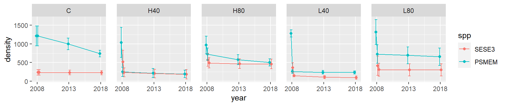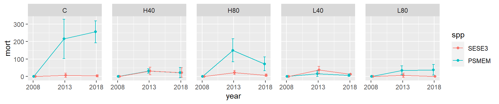 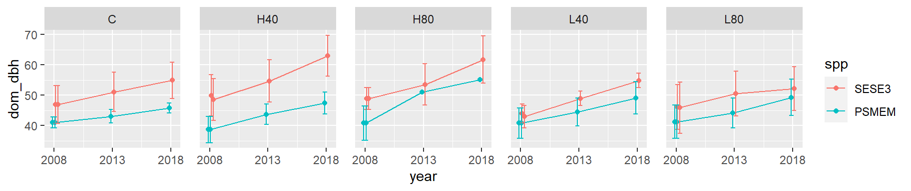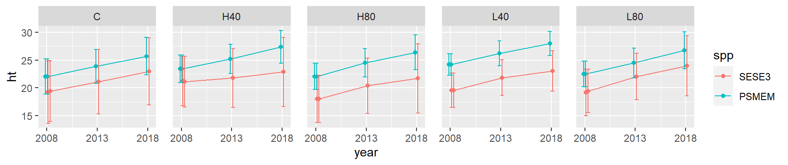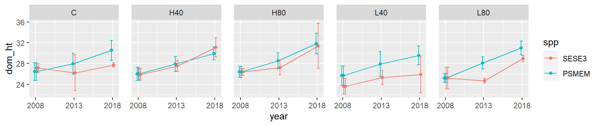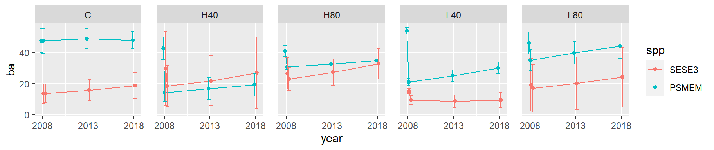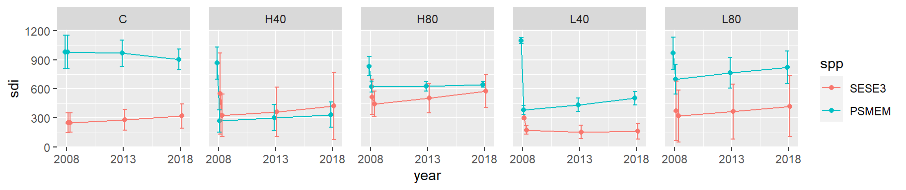
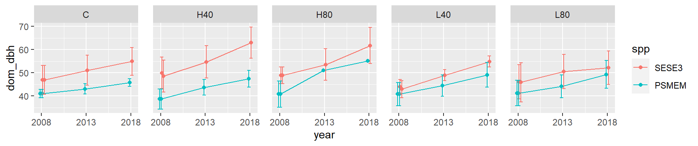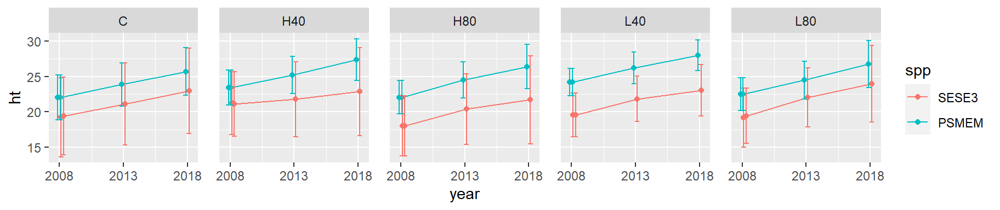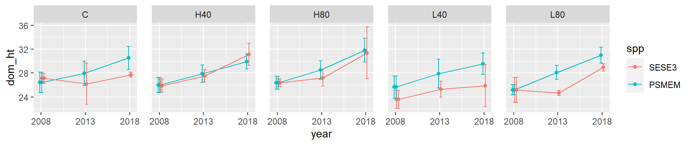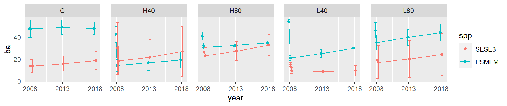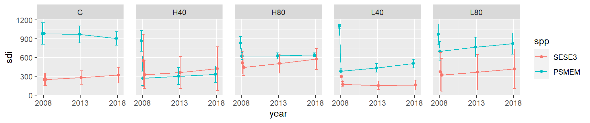